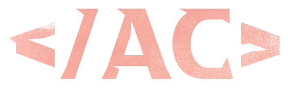

Ana Clara Maiberg
Olá! Tenho 16 anos e sou uma estudante de Python do Entra 21.
Nasci e fui criada em Blumenau, Santa Catarina.
Sou extremamente grata por essa oportunidade pois cada dia aprendo mais
hardskills simultaneamente às softskills. Ainda mais considerando que eu
basicamente não as possuia previamente ao Entra 21.
Almejo trabalhar com isso pois é algo que me faz sentir
genuinamente realizada. Planejo seguir aprendendo pelo resto
indefinido de tempo da minha existência.
Falo inglês fluentemente. A grande maioria do que eu sei aprendi de
forma autodidata. Atualmente, estou estudando um pouco de italiano e
alemão para que, então, possa decidir qual das duas aprender a fundo primeiro.
Programação
Durante o programa, adquiri conhecimentos em múltiplas áreas. As principais
sendo: Banco de Dados; html e CSS; Programação Orientada a Objetos(POO);
Automação de Processos(RPA); diversas bibliotecas; etc.
Aprendi a trbalhar em grupo através de trabalhos como: fazer um verificador e criador de cpf válido; verificador e criador
de códigos de barras EAN-8 e EAN-13; dar uma aula sobre a biblioteca pillow em que, para minha surpresa,
4 horas foram pouco tempo.
Se quiser acompanhar meu progresso como estudante de programação,
cheque e me siga nas seguintes plataformas:
Projetos
